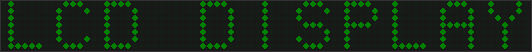

|
xtd
0.2.0
|
Loading...
Searching...
No Matches
lcd_label3.cpp
demonstrates how to use xtd::forms::lcd_label control.
- Windows

- macOS
- Gnome
#include <xtd/forms/application>
#include <xtd/forms/context_menu>
#include <xtd/forms/form>
#include <xtd/forms/lcd_label>
#include <xtd/forms/system_texts>
#include <xtd/startup>
using namespace xtd;
using namespace xtd::drawing;
using namespace xtd::windows::forms;
class form1 : public form {
public:
static auto main() {
application::run(form1 {});
}
form1() {
auto_size(true);
auto_size_mode(forms::auto_size_mode::grow_and_shrink);
form_border_style(forms::form_border_style::none);
opacity(0.5);
start_position(form_start_position::center_screen);
top_most(true);
label1.auto_size(true);
label1.context_menu(context_menu1);
label1.fore_color(color::lime);
label1.height(50);
label1.lcd_style(lcd_style::dot_matrix_display);
label1.parent(*this);
label1.text("LCD DISPLAY");
label1.mouse_down += [&](object & sender, const mouse_event_args & e) {
mouse_location = e.location();
label1.cursor(cursors::no_move_2d());
};
label1.mouse_up += [&](object & sender, const mouse_event_args & e) {
mouse_location = point::empty;
label1.cursor(cursors::default_cursor());
};
label1.mouse_move += [&](object & sender, const mouse_event_args & e) {
if (mouse_location != point::empty) location(location() + e.location() - mouse_location);
};
}
private:
lcd_label label1;
menu_item context_exit_menu_item {system_texts::exit(), {*this, &form1::close}};
forms::context_menu context_menu1 {context_exit_menu_item};
point mouse_location = point::empty;
};
startup_(form1::main);
Represents an ordered pair of integer x- and y-coordinates that defines a point in a two-dimensional ...
Definition point.h:54
#define startup_(main_method)
Defines the entry point to be called when the application loads. Generally this is set either to the ...
Definition startup.h:162
The xtd::drawing namespace provides access to GDI+ basic graphics functionality. More advanced functi...
Definition actions_system_images.h:11
The xtd namespace contains all fundamental classes to access Hardware, Os, System,...
Definition system_report.h:17
Generated on Sun Dec 31 2023 22:09:17 for xtd by Gammasoft. All rights reserved.